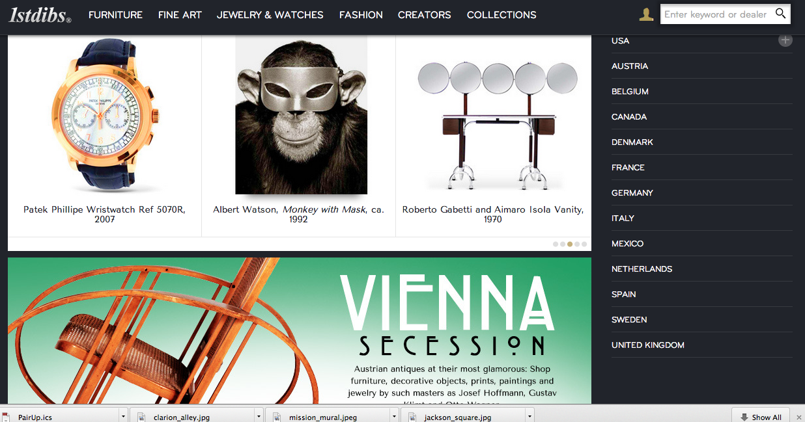
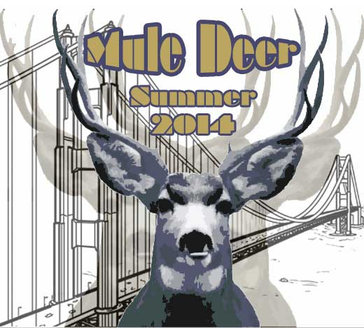
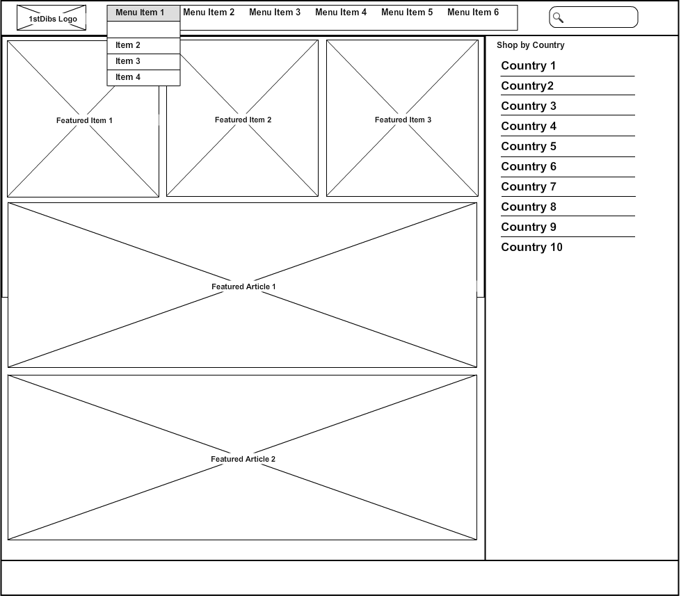

Reviewing my favorite 3 sites and a discussion about how design and layout affect user experience.
A discussion of DBC's culture, impressions, and expectations.
Create wireframe models of your favorite sites and discuss how design and layout affect user experience.
